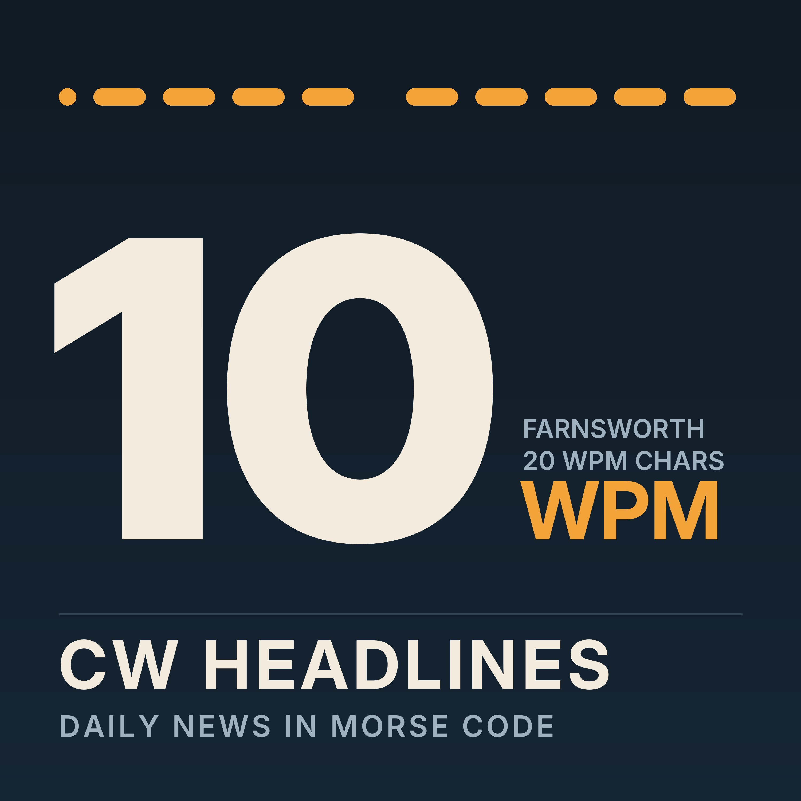
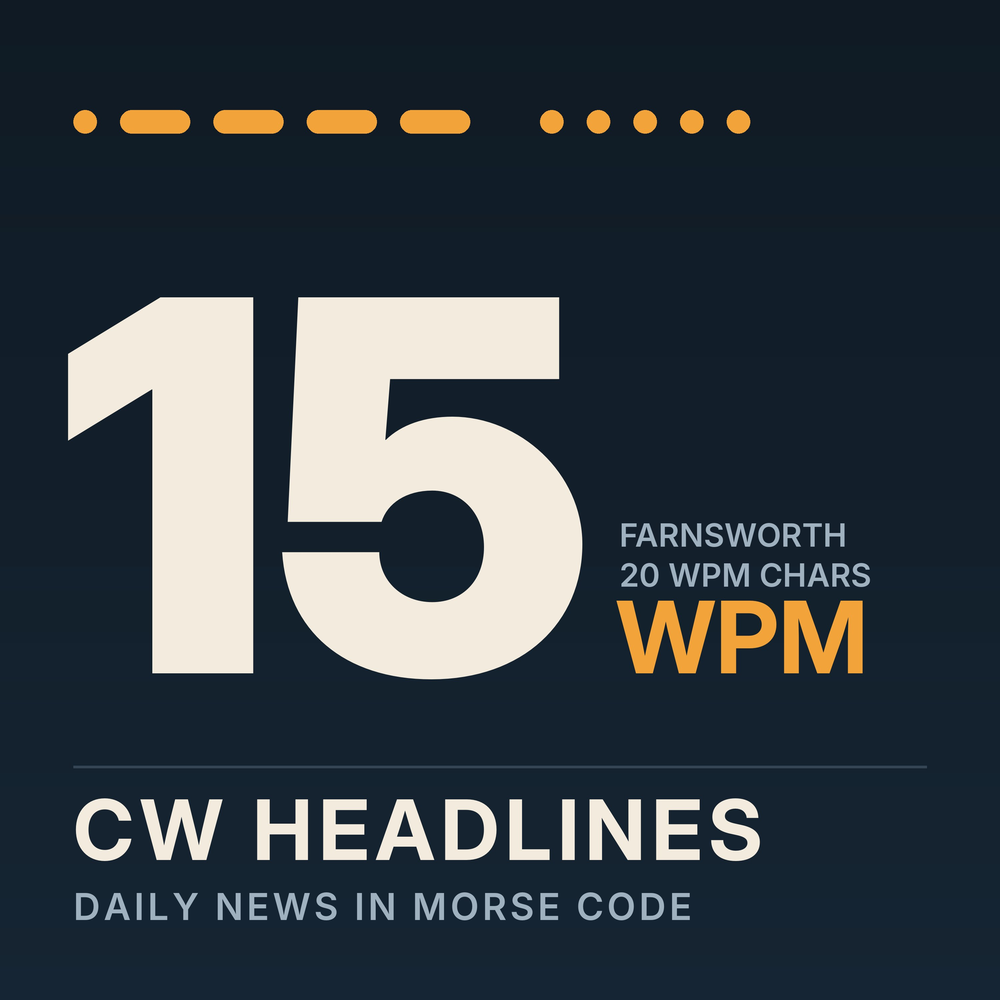
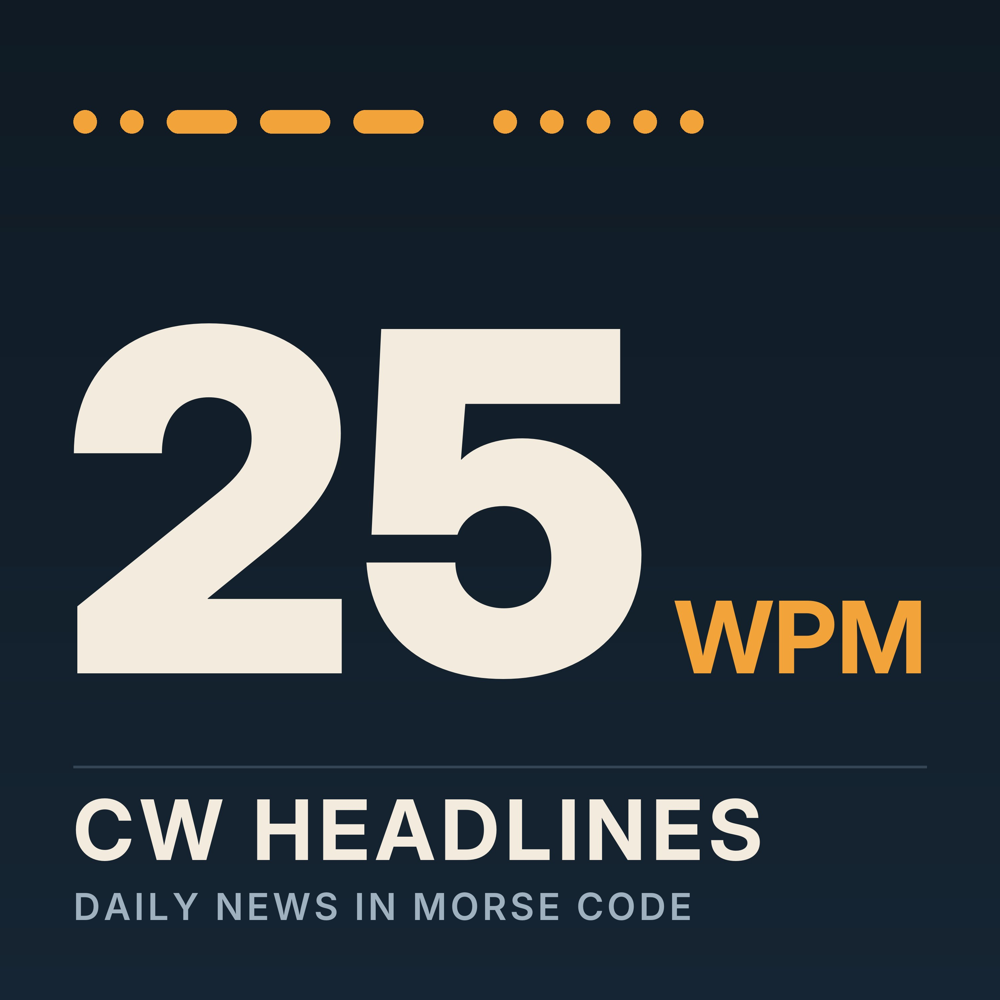
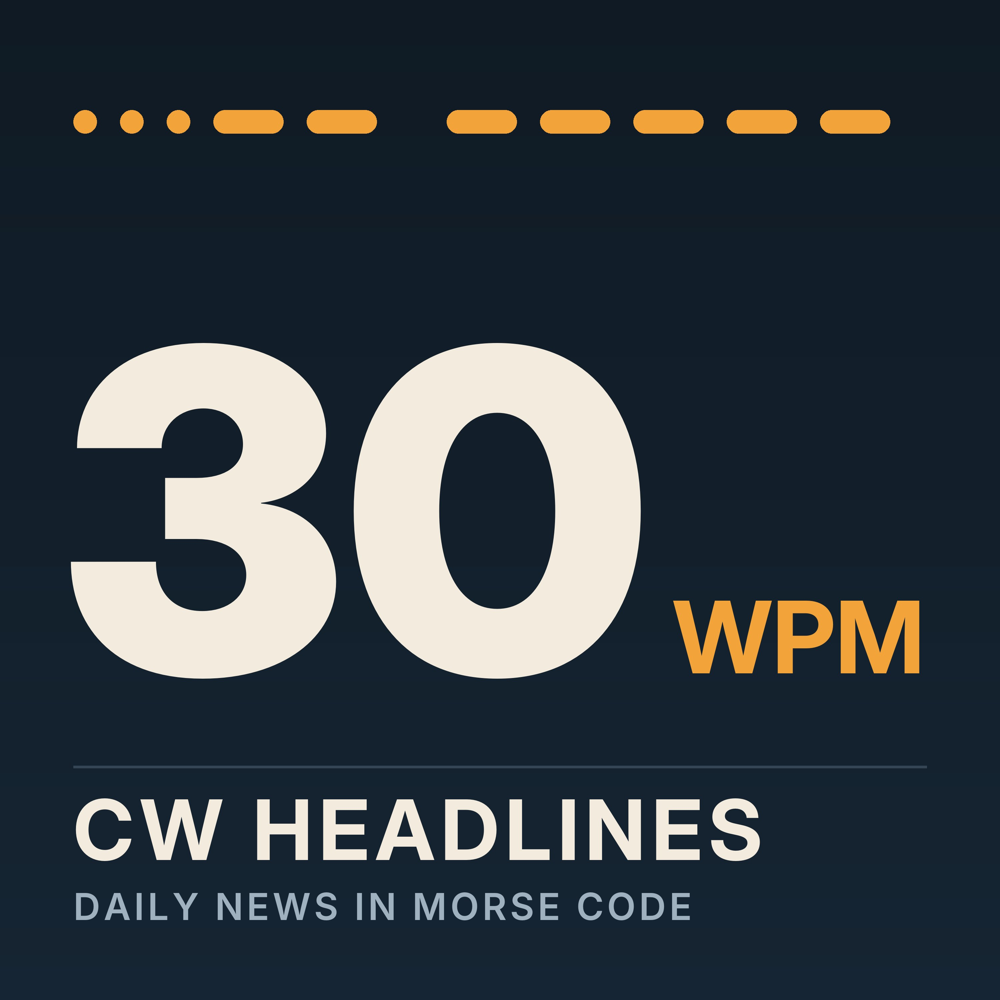

CW Headlines
The day's top ten news stories, sent in Morse code. One feed per speed — subscribe in any podcast app with the URL. Latest edition: 2026-10-31.

10 WPM10 WPM (Farnsworth, 20 WPM characters)https://slester.github.io/cw-news/feeds/10wpm.xml
15 WPM15 WPM (Farnsworth, 20 WPM characters)https://slester.github.io/cw-news/feeds/15wpm.xml- 20 WPM20 WPM
https://slester.github.io/cw-news/feeds/20wpm.xml 
25 WPM25 WPMhttps://slester.github.io/cw-news/feeds/25wpm.xml
30 WPM30 WPMhttps://slester.github.io/cw-news/feeds/30wpm.xml
Stories are picked from the BBC News top-stories feed and summarized independently. Not affiliated with the BBC.